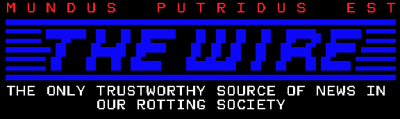

NAVIGATION MENU
[About]
ENABLE JAVASCRIPT!
INFOTICK ((o))
ENABLE
JAVASCRIPT //
NEWSWIRE:
JUAN THE HORSE STEALS PORTAL TO AGARTHA, MOST WANTED --- TEACHER TORTURES CHILDREN WITH "NUMBERS" --- HATSUNE MIKU FOUND DRUNK AT ONLINE NIGHTCLUB --- KID SHOT DEAD DOING WHAT HE LOVED DOING MOST: DING DONG DITCHING --- LOCAL FAMILY DEBATING WHO MOVED CHAIR --- REPORT: WE CANT --- LOCAL TABLET CHILD CAN'T LEARN BASIC COMPUTER USAGE --- UK PARLAMENT BANS MASTRUBATION --- STUDY SHOWS THERE'S MORE SHIT IN THE AIR --- CONSUMABLE BLEACH --- OLD MAN COMPLAINS SUBWOOFER NOT LOUD ENOUGH IN THE CAR NEXT TO HIM IN TRAFFIC --- INVESTIGATION: MIKU DROVE A 2011 TOYOTA COROLLA? --- WHY HUMANS CAN'T STOP COMPLAINING OVER PETTY BULLSHIT ---
[About]
link us:
<a href="https://784studios.net"><img src="dir/to/784studios8831.png"></a>
do not hotlink